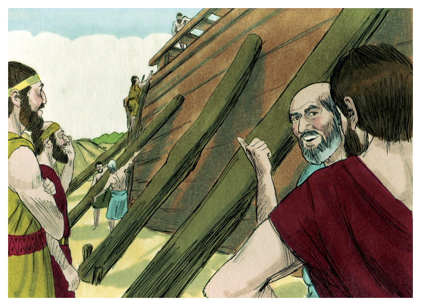
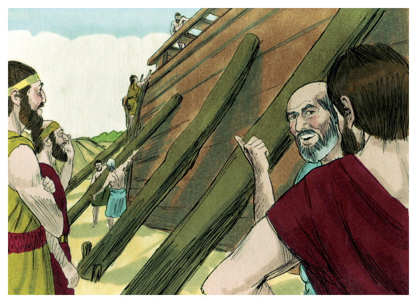
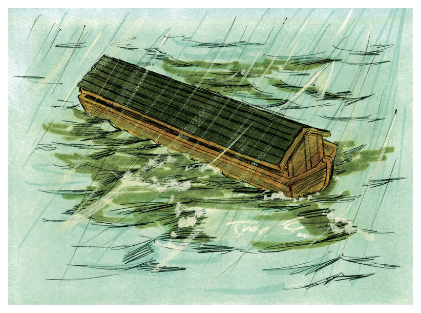
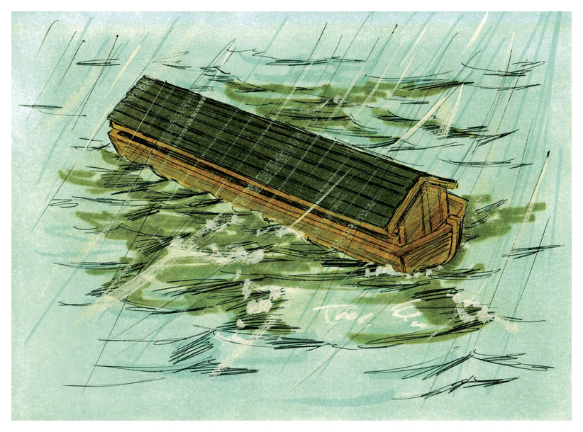
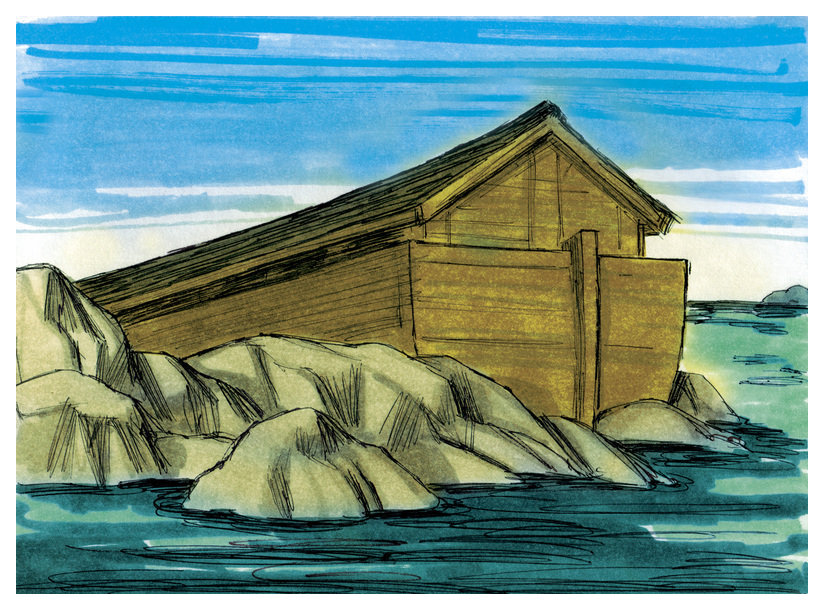
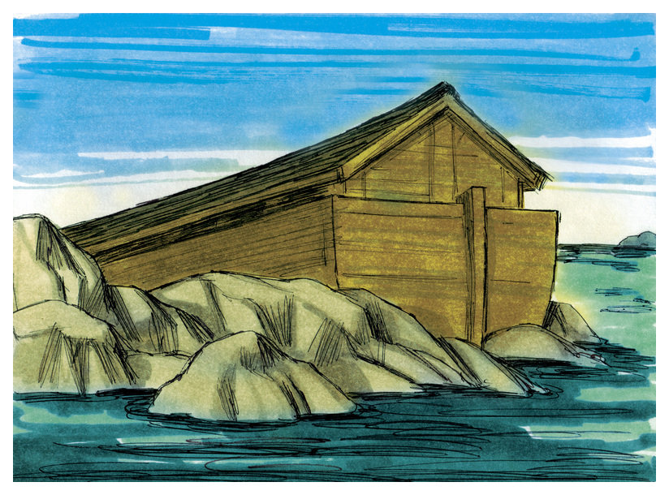

Nuh dan Air Bah
(Kejadian 6-10)
 Nuh adalah seorang yang taat kepada Tuhan, sedangkan semua orang lain membenci dan tidak menaati Tuhan.
Suatu hari Tuhan berfirman kepada Nuh, "Aku akan menghancurkan dunia yang jahat ini, hanya engkau dan keluargamu yang akan selamat"
Nuh adalah seorang yang taat kepada Tuhan, sedangkan semua orang lain membenci dan tidak menaati Tuhan.
Suatu hari Tuhan berfirman kepada Nuh, "Aku akan menghancurkan dunia yang jahat ini, hanya engkau dan keluargamu yang akan selamat"
 Tuhan memperingati Nuh bahwa bumi akan ditutupi oleh air bah. "Buatlah sebuah bahtera yang besar untuk keluargamu dan banyak binatang".

Setelah itu Nuh segera membangun sebuah bahtera. Banyak orang yang mengejek Nuh ketika dia mencoba mengajak dan menjelaskan mengapa ia membuat sebuah bahtera, tetapi Nuh tetap taat kepada Tuhan dan membangun bahtera tersebut.
Tuhan memperingati Nuh bahwa bumi akan ditutupi oleh air bah. "Buatlah sebuah bahtera yang besar untuk keluargamu dan banyak binatang".

Setelah itu Nuh segera membangun sebuah bahtera. Banyak orang yang mengejek Nuh ketika dia mencoba mengajak dan menjelaskan mengapa ia membuat sebuah bahtera, tetapi Nuh tetap taat kepada Tuhan dan membangun bahtera tersebut.
 Setelah selesai membangun bahtera, dengan segera bahtera itu diisi dengan banyak sekali persediaan.
Setelah selesai membangun bahtera, dengan segera bahtera itu diisi dengan banyak sekali persediaan.
 Binatang-binatang pun mulai berdatangan. Semua binatang berpasangan dan berjalan masuk kedalam bahtera, begitu juga Nuh, isterinya, tiga orang anaknya dan isteri-isteri mereka. Kemudian turunlah hujan.

Binatang-binatang pun mulai berdatangan. Semua binatang berpasangan dan berjalan masuk kedalam bahtera, begitu juga Nuh, isterinya, tiga orang anaknya dan isteri-isteri mereka. Kemudian turunlah hujan.

 Hujan lebat meliputi bumi empat puluh hari empat puluh malam. Air bah meliputi kota-kota dan desa-desa, begitu juga gunung-gunung pun tertutup oleh air. Segala sesuatu yang bernafas pun mati, tetapi bahtera melindungi Nuh dan keluarganya dari air bah.

Setelah lima bulan air bah tersebut Tuhan mengirimkan angin kering sehingga bahtera itu terdampar di sebuah gunung tinggi bernama Ararat. Nuh dan keluarganya masih tinggal di dalam selama empat puluh hari lagi sampai air menyusut.
Hujan lebat meliputi bumi empat puluh hari empat puluh malam. Air bah meliputi kota-kota dan desa-desa, begitu juga gunung-gunung pun tertutup oleh air. Segala sesuatu yang bernafas pun mati, tetapi bahtera melindungi Nuh dan keluarganya dari air bah.

Setelah lima bulan air bah tersebut Tuhan mengirimkan angin kering sehingga bahtera itu terdampar di sebuah gunung tinggi bernama Ararat. Nuh dan keluarganya masih tinggal di dalam selama empat puluh hari lagi sampai air menyusut.
 Nuh mengirim seekor burung gagak dan merpati keluar dari jendela bahtera. Karena tidak menemukan tanah yang kering, maka burung itu kembali kepada Nuh.
Satu minggu kemudian Nuh mencoba lagi. Merpati itu kembali dengan setangkai daun zaitun di paruhnya.
Minggu berikutnya Nuh tahu bahwa bumi sudah kering karena merpati itu tidak kembali.
Lalu Tuhan berkata kepada Nuh "Inilah waktunya untuk meninggalkan bahtera". Bersama-sama Nuh dan keluarganya melepaskan semua binatang-binatang itu.
Betapa senangnya perasaan Nuh pada saat itu. Lalu dia membangun sebuah altar sebagai bentuk ungkapan syukur dan persembahan kepada Tuhan karena sudah menyelamatkan dia dan keluarganya dari air bah tersebut.
Nuh mengirim seekor burung gagak dan merpati keluar dari jendela bahtera. Karena tidak menemukan tanah yang kering, maka burung itu kembali kepada Nuh.
Satu minggu kemudian Nuh mencoba lagi. Merpati itu kembali dengan setangkai daun zaitun di paruhnya.
Minggu berikutnya Nuh tahu bahwa bumi sudah kering karena merpati itu tidak kembali.
Lalu Tuhan berkata kepada Nuh "Inilah waktunya untuk meninggalkan bahtera". Bersama-sama Nuh dan keluarganya melepaskan semua binatang-binatang itu.
Betapa senangnya perasaan Nuh pada saat itu. Lalu dia membangun sebuah altar sebagai bentuk ungkapan syukur dan persembahan kepada Tuhan karena sudah menyelamatkan dia dan keluarganya dari air bah tersebut.
 Tuhan memberikan satu janji yang luar biasa kepada Nuh. Tuhan tidak akan pernah lagi mengirim air bah untuk menghakimi dosa manusia.
Tuhan memberikan satu peringatan untuk janjiNya, yaitu pelangi yang menandai janji Tuhan kepada Nuh. Dan pada saat itu Nuh dan keluarganya memulai sebuah permulaan yang baru. Keturunannya akan memenuhi seluruh bumi. Semua bangsa didunia ini berasal dari keturunan Nuh dan anak-anaknya.
Tuhan memberikan satu janji yang luar biasa kepada Nuh. Tuhan tidak akan pernah lagi mengirim air bah untuk menghakimi dosa manusia.
Tuhan memberikan satu peringatan untuk janjiNya, yaitu pelangi yang menandai janji Tuhan kepada Nuh. Dan pada saat itu Nuh dan keluarganya memulai sebuah permulaan yang baru. Keturunannya akan memenuhi seluruh bumi. Semua bangsa didunia ini berasal dari keturunan Nuh dan anak-anaknya.
-Tamat-
Kembali